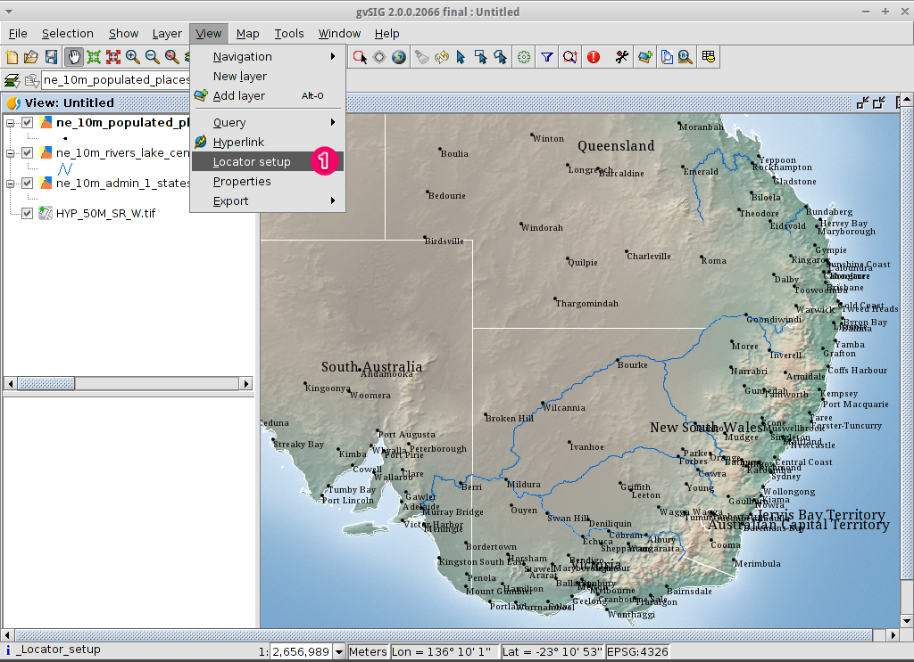

Megjegyzés
Ez a projekt csak az OSGeoLive virtuális gépben (VMDK) található meg
gvSIG Desktop gyorstalpaló¶
A gvSIG egy térinformatikai rendszer (GIS), egy asztali alkalmazás, melyet bármilyen térinformatikai adatok rögzítésére, tárolására, kezelésére, elemzésére és szétosztására terveztek, abból a célból, hogy komplex vezetési és tervezési problémákat oldjanak meg. A gvSIG a felhasználóbarát kezelő felületéről ismert, képes megnyitni a legelterjedtebb vektor és raszter formátumokat. Számos eszközt tartalmaz a térinformatikai adatokkal történő munkához (lekérdező eszközök, nyomtatái kép, geoprocessing, hálózatok, stb.), melyek a téradatokkal dolgozó felhasználók számára ideális eszközzé teszik.
Contents
- gvSIG indítása és egy nézet létrehozása
- A nézet vetületének beállítása
- Rétegek hozzáadása a nézethez
- A nézet konfigurálása
- Réteg megjelenítés módosítása
- Áttekintő vagy lokátor hozzáadása
- Városok kiválasztása egy régióban
- Kiválasztott elemek exportálása egy új shape fájlba
- Új térkép létrehozása
- Projektjének mentése és kilépés a gvSIG-ből
- Egy bővítmény telepítése
- OpenStreetMap réteg hozzáadása
- WMTS réteg hozzáadás
- Mi a következő?
Megjegyzés
Ha a gvSIG interfész nem válaszol, próbálja meg az Alt+f billentyűt a fájl menü megnyitásához. Ezután a felhasználói felület működni fog. Ez a hiba csak az OSGeoLive kiadásban fordul elő. A normál gvSIG telepítésnél nem jelenik meg.
Megjegyzés
Megjegzés a gvSIG 2.3.1 verzióhoz: Raszter fájlok betöltéséhez a felhasználónak írási joggal kell rendelkeznie ahhoz a mappához, melyben a fájl van. Különben az alkalmazás egy megfelelő mappát (írási joggal) fog kérni. Mivel a „user” felhasználó nem rendelkezik írási joggal a „data” mappában, szükséges egy egy olyan mappa kiválasztása ahová a felhasználó rendelkezik írási joggal, például „/home/user”.
gvSIG indítása és egy nézet létrehozása¶
- Válassza a gvSIG-et az alkalmazás menüből, . Általában az alkalmazás elindulása egy percbe telik.
- Alapértelmezés szerint a gvSIG egy üres projektet fájlt nyit meg és a «View» dokumentum típust választja. Habár az OSGeoLive-on a gvSIG-et úgy konfiguráltuk, hogy egy alapértelmezett projekttel induljon. Kattintson a New Project gombra vagy menjen a menüben a -re. Válassza a Discard Changes, mivel nem akarjuk az legutóbbi projektet használni.
- Kattintson a New gombra egy nézet létrehozásához. Automatikusan megnyílik.

A nézet vetületének beállítása¶
Válassza a .

Az aktuális vetülethez, kattintson a guilabel:… gombra. Ez a New CRS párbeszédablakot nyitja meg.
A legördülő lista használata Type, EPSG kiválasztásra.
Írja be a a koordináta referencia rendszer EPSG kódját. Ehhez a példához EPSG=4326 értéket használunk, mely a WGS84 2D földrajzi koordináták. Ezután kattintson a guilabel:Search gombra. Ezt kilistázza a kiválasztott CRS-t a keresés mező alatti táblában.
Válassza az guilabel:OK gombot, hogy visszatérjen View Properties párbeszédablakhoz. Az EPSG kód most 4326 és a térképi egységek fokokra változott.
Válassza a OK gombot a Project Manager-hez visszatéréshez.

- A nézet ablak három részből áll
- (2) The top-left cell contains a list of vector or raster layers being used in the view (i.e. Table-of-Contents).
- (3) The bottom-left cell displays the extent of the main view over a selected vector file.
- (4) The right cell is the main display area where raster and vector data is rendered.

Rétegek hozzáadása a nézethez¶
- Kattintson az Add layer ikonra fő eszköztárban az Add layer párbeszédablak megnyitásához.
- Válassza az guilabel:Add gombot a párbeszédablakban. Alapértelmezésben az első a guilabel:File fül, így az Open* fájl párbeszédablak jelenik meg.
- Ásson le a /usr/local/share/data/natural_earth2/` könyvtárig.
- Válasszon fájlokat, ahogy a képen látszik.

Megjegyzés
Alapértelmezésben az összes formátum megjelenik, így vektor és raszter fájlokat kiválaszthat a CTRL billentyű nyomvatartásával.
- Kattintson az OK gombra az Add layer párbeszédablakhoz visszatéréshez.
- Kattintson az OK gombra az Add layer párbeszédablakban a nézethez visszatéréshez.
A nézet konfigurálása¶
- Kattintson a Maximize ikonra az adatok jobb megjelenítéséhez.
- A tartalomjegyzék oszlop módosítható az egér használatával a hosszú fájl nevek megnézéséhez.
- Abban az esetben, ha egy raszter réteg a felül van, akkor kézzel alulra kell mozgatni.

Nagyítás egy régióra¶
- Alapértelmezés szerint a Zoom in eszköz a kiválasztott a fő eszköztárban.
- Használja az egeret dél-kelet Ausztrália köré egy befoglaló téglalap rajzolásához. Úgy csinálja ezt, hogy a téglalap bal-felső sarkát kijelöli az egérrel, majd az egérgombot nyomva tartva húzza a kiválasztott terület felett a téglalap jobb-alsó sarkáig. Engedje el a bal egérgombot amikor a megfelelő területet megadta.

Réteg megjelenítés módosítása¶
Felület átlátszóvá tétele¶
- Válassza ki a
ne_10m_admin_1_states_provinces.shpréteget a bal egérgombbal és kattintson ismét a jobb egérgombbal. - Válassza a almenüt.
- A Layer properties párbeszédablak jelenik meg.

Vektor rétek jelrendszerének módosítása¶
- Válassza a guilabel:Symbols fület a Layers properties párbeszédablak tetején.
- Válassza a guilabel:Choose symbol gombot, hogy a Symbol selector párbeszédablak megjelenjen.
Szüntesse meg a szimbólum kitöltést és módosítsa a körvonal színét¶
- Kapcsolja ki a Fill color négyzetet, hogy a területek átlátszóak legyenek.
- Kattintson a …-ra a Border color mellett.
- Válassza a fehéret mint szín.
- Kattintson a OK gombra, hogy a Symbol selector párbeszédablakhoz visszatérjen.
- Kattintson a OK gombra, hogy a Layers properties párbeszédablakhoz visszatérjen.

Vektor réteg címkézésének módosítása¶
- Válassza a Labelling fület a Layers properties párbeszédablak tetején.
- Módosítsa a szöveg attribútumokat képen láthatókra, majd kattintson a Accept gombra.

Eredmény megtekintése¶
Vegye észre, hogy ez egy nagyon egyszerű nézet, amely egy pontot, egy vonalat és egy sokszögvektort tartalmazó fájlt jelenít meg egy raszter felett. Ez ugyanolyan egyszerű, ahogy egy légi fénykép vagy digitális terep modell háttér előtt a különböző formátumokban tárolt vektor adatok megjelenítése.

Áttekintő vagy lokátor hozzáadása¶
Válassza a -ot.
{kind=link}
- Kattintson a Add layer… gombra.
- A réteg hozzáadás ablakban kattintson az Add gombot.
- Válassza a
HYP_50M_SR_W.tifréteget. - Kattintson az Open gombra a réteg hozzáadása ablakhoz visszatéréshez.
- Kattintson az Ok gombra és zárja le a lokátor konfiguráció ablakot.

Most könnyen megtudhatjuk a nézetünk hol helyezkedik el a világban,

Városok kiválasztása egy régióban¶
Válassza ki a régiót¶
- Válassza ki az
ne_10m_admin_1_states_provinces.shpréteget a bal egérgomb használatával. - Válassza a Select by point ikont a fő eszközsorban.
- Kattintson az Új Dél Wales államot reprezentáló területre. A terület sárgára vagy más színűre változik a felhasználói beállításoknak megfelelően.

Nyissa meg a réteggel szelektálás eszközt¶
- Válassza az
ne_10m_populated_places.shpréteget a bal egérgombbal. - Válassza a -t a Selection by Layer párbeszédablak megnyitásához

Válassza ki a régióba eső városokat¶
- Módosítsa az első kiválasztási feltételt a Selection by Layer párbeszédablak bal oldali legördülő listájában, ahogy a képen látja.
- Módosítsa a második szelekció feltételt, ahogy a képen látszik.
- Kattintson a New set gombra a kiválasztott területbe eső városok kiválasztásához.
- Válassza a Cancel gombot a Selection by Layer párbeszédablakban a térkép nézethez visszatéréshez.

Szüntesse meg a terület kiválasztását, hogy lássa mi történt¶
- Válassza ki az
ne_10m_admin_1_states_provinces.shpréteget a bal egérgomb használatával. - Válassza a «Clear selection» ikont a fő eszközsorban.
- Most láthatja, hogy csak Új dél Wales-en belüli városokat választottuk ki.
{kind=link}
Kiválasztott elemek exportálása egy új shape fájlba¶
Válassza ki az output fájl formátumot¶
- Válassza az
ne_10m_populated_places.shpréteget a bal egérgombbal. - Válassza a menüpontot az export indításához.
- Válassza a Shape Format-ot.
- Kattintson a Next-re.

Válassza ki az output fájl nevét¶
- Válasszon egy mappát és írja be a fájl nevét.
- Kattintson az Open-re majd a Next-re.

Referencia rendszer¶
- Válassza az Original (EPSG:4326) beállítást a nézet referencia rendszerének megőrzéséhez.
- Kattintson a Next-re.
Export beállítások¶
- Válassza a Selected features, hogy csak az Új dél Wales-be eső városokat exportálja.
- Kattintson az Export-ra.

Eredmény megtekintése¶
- Az új réteget hozzáadtuk a nézethez.
- Annak érdekében, hogy ellenőrizze, hogy az export rendben volt, állítsa át az eredeti fájlt láthatatlanná. Csak Új-Dél-Wales városait kell látnia.

Új térkép létrehozása¶
- Válassza a Map dokumentum típust a Project Manager-ben.
- Kattintson a New gombra egy térkép létrehozásához.
- Egy új ablak jelenik meg, ahol kiválaszthatja a térképre beszúrni kívánt nézetet. Válassza ki az egyetlen nézetet, amellyel rendelkezik, és nyomja le az „Accept* gombot.
- A térkép a kijelölt nézettel jelenik meg.
Munka a térképekkel¶
- A fő eszköztár ikonjaival vagy a menü almenüivel további elemeket adhat hozzá a térképhez, például egy léptéket és egy északi nyilat.
- A térképet kinyomtathatja vagy exportálhatja PDF-be vagy Postscriptbe, hogy más munkába beillessze.
- Válassza a Close window ikont a Project manager-hez visszatéréshez

Projektjének mentése és kilépés a gvSIG-ből¶
- A későbbi használathoz a projektek elmenthetők a menüponttal vagy
- A projektekből kiléphet vagy lezárhatja a menüponttal.

Egy bővítmény telepítése¶
Nyissa meg a bővítmény kezelőt¶
- Válassza a -t. Kis idő múlva az Install package ablak jelenik meg.
- Az Install package ablakon belül válassza a Installation from URL lehetőséget.
- Válassza a képen látható repo URL-t.
- Kattintson a Next gombra.

Bővítmény keresés¶
- A bővítmény kezelőben modulokat és szimbólum könyvtárakat találunk.
- Gépelje be a Fast filter szövegmezőbe «Forestry».
- Kattintson a Symbols: Forestry bővítményre (ez egy szimbólum könyvtár)
- Kattintson a Next-re.

Telepítés befejezése¶
- Kattintson a Start downloading-ra.
- Majd kattintson a Next-re.
- Végül kattintson a Finish-re.
Bár az üzenet azt jelzi, hogy újraindításra van szükség, a szimbólum könyvtárakhoz ez nem szükséges. Csak modul telepítésekor kell újraindítani.
OpenStreetMap réteg hozzáadása¶
- Most hozzáadjuk az OpenStreetMap térképet. Egy új nézetben, EPSG 3857, kattintson az Add layer… gombra.
- Válassza az OSM fület.
- Válassza a «Mapnik»-et az elérhető rétegek közül.
- Kattintson az Ok-ra.

Eredmény megtekintése¶
Egy új réteget adtunk a nézethez. Egy régióra ránagyítva láthatjuk a részletes OpenStreetMap adatokat.


WMTS réteg hozzáadás¶
A WMTS az OGC WMS szabvány egy továbbfejlesztése, mely csempék kezelésén alapul.
Válasszon egy szervert¶
- Egy nézeten belül kattintson a Add layer… gombra.
- Válassza a WMTS fület.
- Válassza a képen látható URL-t.
- Kattintson a Connect-re.
- Kattintson a Next-re.

Válasszon egyet az elérhető rétegekből¶
- Válasszon egyet a rendelkezésre álló rétegek közül (pl. bluemarble)
- Kattintson az Add-ra.
- Kattintson a Next-re.

Válasszon képformátumot és referencia rendszert¶
- Válassza az image/jpeg-et a képformátumnak.
- Válassza az EPSG:4326-ot (vegye figyelembe, hogy a nézethez ugyanez az SRS kell, ha ez nem igaz lépjen vissza, módosítsa és kezdje elölről).
- Kattintson az Accept-re.

Egy új réteget adott a nézethez.